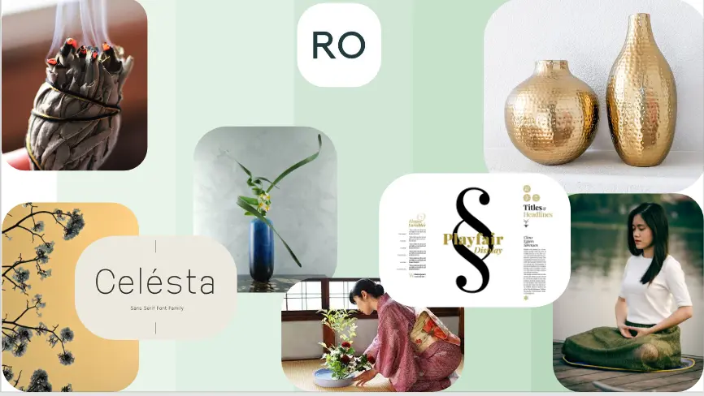
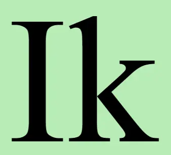
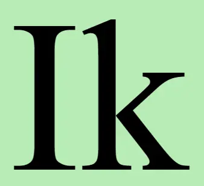

Mit Website
For at designe mit første website brugte jeg et layout der opleves både som dekorativt og funktionelt. Jeg brugte den "Mobile First Princip" til at designe mit website og for at gøre det responsivt brugte jeg medie queries. Layoutet på mit design er enkelt og dette gør at brugeren finder det, de leder efter nemt og hurtigt. Photoshop brugte jeg for at behandle billederne (kontrast) og squoosh til at komprimere dem til en WebP format. Denne metode optimerer websitets SEO samt uploadhastigheden og dette giver en bedre brugeroplevelse for besøgende. Til den visuelt design, undersøgte jeg forskellige design stilarter og valgte at bruge en minimalistisk stil, da jeg mener at det er denne stil der passer bedst til mit emne (Feng Shui). Til min komposition brugte jeg "Approximate Symmetri" og til billederne brugte jeg "The rule of thirds". Typographien blev valgt ift. til den minimalistisk design. Farvepaletten er sarte (pastelfarver, lyse).
Moodboard og Stiletyle blev udarbejdet med Adobe XD og wireframes for hver side. Jeg anvendte "The five seconds test" da denne test er hurtigt og nem at evaluere, enten "forstå" man websitet eller "ikke forstå det". Resultat at websitet var positivt. Det var FORSTÅET. Favicon.io Generator blev brugt til at designe og download filen. Den blev eksportere som en SVG fil.
Vi fik kendskab til Developer Tools værktøj for at undersøge og inspicere html og css elementer i browseren. Developer tools eller kort "DevTools" er programmer, der giver en udvikler mulighed for at oprette, teste og fejlfinde software. Nuværende browsere giver integrerede udviklerværktøjer, som gør det muligt at inspicere et websted. De lader brugere inspicere og fejlsøge sidens HTML, CSS og JavaScript, tillader at inspicere den netværkstrafik, den forårsager, gør det muligt at måle dens ydeevne og meget mere.
 
